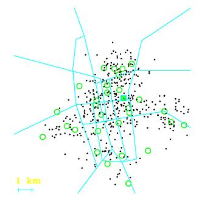
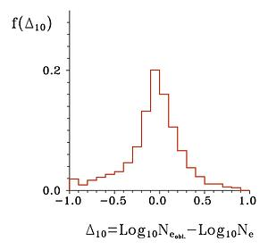
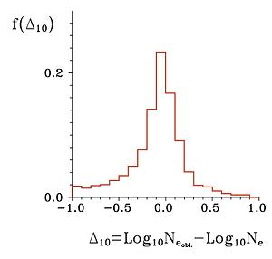
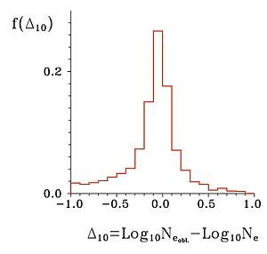

|
Symulacje |
to, czego sie spodziewamy
|
Poniewaz wiemy (mniej wiecej), jak czesto przychodzi do nas promieniowanie
kosmiczne i wiemy tez (mniej wiecej), jak wygladaja wielkie peki promieniowania
kosmicznego o najwyzszych energiach, to wiedzac jakie detektory i gdzie
zamierzamy poustawiac, mozemy pokusic sie o przewidywania tego, co bedzie sie
dzialo, gdy projekt Maze z projektu stanie sie rzeczywistoscia.
Rysunek obok pokazuje (zaznaczone kolkami) szkoly, ktore zglosily na poczatku
2002 roku chec uczestnictwa w projekcie (kwadracik to budynek IPJ). Male
czarne punkciki to miejsca padania rdzeni (osi) wielkich pekow pochodzacych od
czastek promieniowania kosmicznego o energiach wiekszych niz 1018eV,
ktore wywolalyby rejestracje w conajmniej czterech szkolach. Ich ilosc
odpowiada mniej wiecej rocznemu okresowi pracy aparatury. Jak widac jest ich
calkiem sporo.
|

|
Im wieksza energia czastki, tym wiekszy pek. Nalezy sie wiec spodziewac, ze
rejestracje pekow o roznych energiach rozmieszczone na mapie beda roznie. Im
energia wieksza tym
efektywna powierzchnia zbierania (tak to sie czasem
nazywa) aparatury bedzie wieksza.
Oczywiscie inaczej tez beda wygladaly wyniki poszczegolnych rejestracji.
Generalnie, im wiekszy pek, tym wiekszych gestosci czastek spodziewamy sie na
poszczegolnych detektorach.
Sytuacje te ilustruja rysunki ponizej. Dla energii 1018,
3 1018
i 1019eV narysowane jest na nich, jak rozrzucone byloby 500
przykladowych pekow i cztery typowe (pierwsze z brzegu) przypadki rozrysowane
szczegolowo. W kazdej szkole sa cztery detektory i kreski pionowe (w
"trafionych" szkolach) pokazuja, jak duzo czastek padlo na kazdy detektor (by
byc precyzyjnym, dlugosci tych kresek sa proporcjonalne do logarytmu liczby
czastek)
|
Dla pekow, jak te przedstawione powyzej, mozna pokusic sie, aby z
zaobserwowanych gestosci (wysokosci slupkow na rysunkach)
odtworzyc, ile czastek bylo w calym peku - zrekonstruowac
pek. Calkowita ilosc czastek w peku jest zupelnie niezla (najlepsza,
jaka w naszej sytuacji moze istniec) miara energii czastki pierwotnej.
Symulacje komputerowe maja to do siebie, ze mozemy wykonac obliczenia
dla zadanej z gory energii czastki (tak jak to przedstawia sie na
obrazkach powyzej). A potem mozemy porownac ja z energia "zrekonstruowanego
peku". Porownanie takie daje nam informacje (niezwykle cenna!) o
zdolnosci rozdzielczej, czyli dokladnosci pomiaru
energii przez nasza aparature.
Ponizej przedstawione sa wyniki takiego porownania (dla tych samych trzech
energii (1018,
3 1018
i 1019eV). Wykresy te pokazuja, jak czesto odserwuje sie konkretne
odchylenia od "wartosci prawdziwej" (nazywa sie je czasem
histogramami, ale to
nie jest takie wazne). Jak widac najczesciej zrekonstruowana wartosc oscyjuje
wokol teh prawdziwej, co odpowiada 0 na osi
poziomej (logarytmy sa rowne). Im ta roznica wieksza, tym "slupek histogramu"
nizszy - tym nizsza czestosc pojawiania sie takich odchylen. Porownujac
histogramy dla roznych energii widac, ze wraz z jej wzrostem zwieksza sie tez
dokladnosc rekonstrukcji, co nie jest znowu niczym niespodziewanym, wprost
przeciwnie raczej i swiadczy to o tym, ze wszystko dziala tak, jak powinno.
|
1018 eV

|
|
3 1018 eV

|
1019 eV

|
|